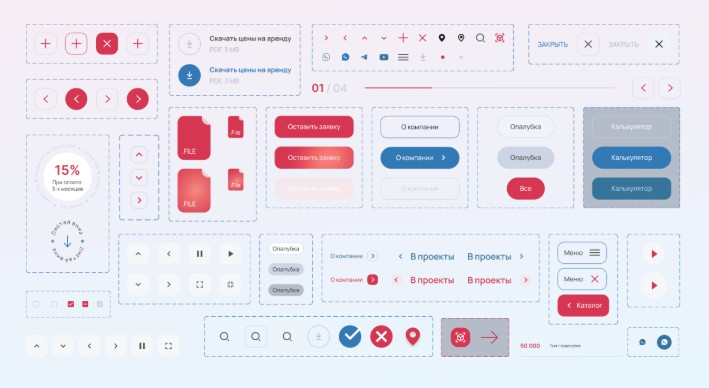

Графика влияет на скорость
Изображение на сайте — это не «картинка», а файл, который влияет на скорость загрузки, качество восприятия и конверсию. Неправильный формат может утяжелить страницу в разы.
Два класса графики:
- Растровая. Из пикселей: фото, сложные изображения. Форматы: JPEG, PNG, WebP, AVIF.
- Векторная. Из математических кривых: иконки, логотипы, схемы. Формат: SVG.
Практическое правило: фото — WebP или AVIF, иконки и логотипы — SVG, прозрачность — PNG только если WebP не подходит.
Оптимизация изображений
Каждый лишний килобайт замедляет загрузку. Что делать перед публикацией:
- Сжимать. Squoosh, TinyPNG, экспортёры Figma.
- Указывать размеры. Атрибуты width и height предотвращают «прыжки» контента.
- Использовать srcset. Разные версии для разных экранов.
- Ленивая загрузка. loading="lazy" для изображений за пределами экрана.
- Alt-текст. Описание для доступности и SEO.
Изображение весом 2 МБ на первом экране — это потерянные пользователи на мобильном интернете. Оптимизация графики — часть дизайна, а не «техническая мелочь».
Иконографика
Иконки — визуальный язык интерфейса. Они экономят место, ускоряют восприятие и делают интерфейс понятнее. Но только если выполнены в единой системе.
Принципы хорошей иконографики:
- Единый стиль. Все иконки — линейные или заливные, с одинаковой толщиной обводки.
- Единая сетка. Иконки рисуются на общей сетке (например, 24×24) с одинаковыми отступами.
- Понятность. Иконка читается без подписи — или имеет подпись рядом.
- Масштабируемость. SVG позволяет менять размер и цвет без потери качества.
UI-kit
UI-kit — набор готовых компонентов: кнопок, полей, карточек, иконок, цветов и типографики. Он нужен, чтобы дизайнер не рисовал одно и то же заново и чтобы все страницы выглядели единообразно.
Что обычно входит в UI-kit:
- Цвета. Палитра с ролями: фон, текст, акцент, семантика.
- Типографика. Шкала заголовков и текста, размеры, интервалы.
- Компоненты. Кнопки (все состояния), поля ввода, чекбоксы, карточки, модальные окна.
- Иконки. Единая система.
- Отступы и сетка. Базовые единицы (4px, 8px) и правила выравнивания.

Дизайн-система
Дизайн-система — следующий уровень после UI-kit. Она включает не только компоненты, но и правила их использования, документацию, токены и процессы поддержки. UI-kit — это «что», дизайн-система — «что, как и почему».
Зачем это бизнесу:
- Скорость. Новые страницы собираются из готовых блоков.
- Единообразие. Пользователь не путается в разных кнопках.
- Масштабируемость. Легче добавлять новые разделы и продукты.
- Передача в разработку. Разработчик получает систему, а не набор картинок.
Дизайн-система экономит бюджет. Вместо того чтобы каждый раз рисовать лендинг с нуля, команда собирает его из проверенных блоков — быстрее, дешевле и без потери качества.
Итог
Графика, иконографика и UI-киты — фундамент визуальной целостности. Правильные форматы ускоряют сайт, единая иконографика делает интерфейс понятным, а UI-kit и дизайн-система позволяют команде работать быстро и согласованно.